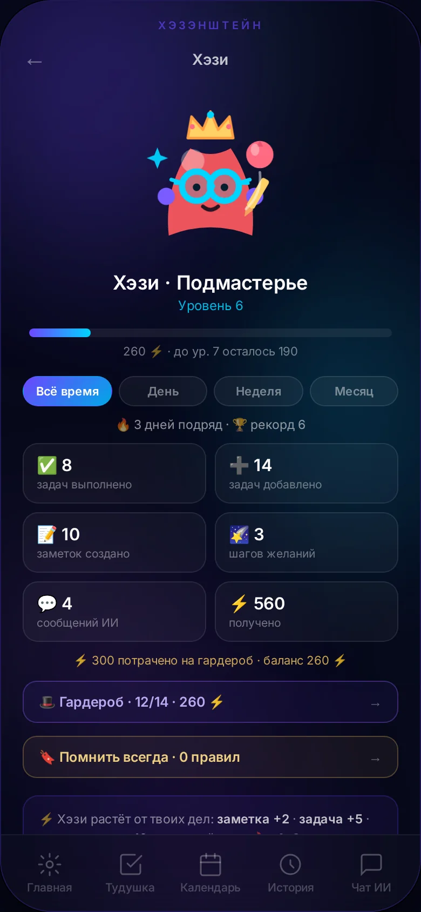
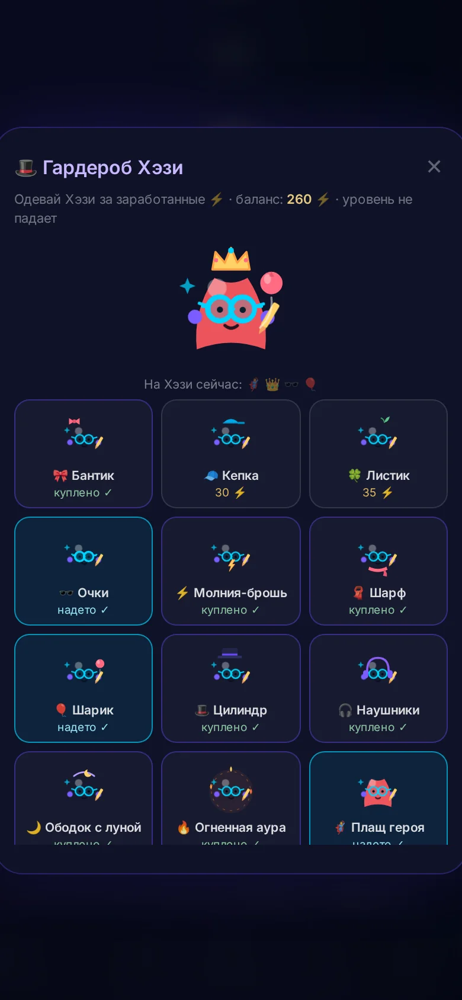

Календарь
Строго про время. Но мысль «позвонить маме» сам не запишет — надо строить форму, выбирать день, вводить название. Поэтому мысли до него не доезжают.
Хэзэнштейн — одно место для мыслей, дел и мечтаний. Напиши как думаешь — ИИ разложит всё сам: задачи, даты, желания. А живой напарник Хэзи будет расти вместе с тобой.
 +5 ⚡
✓ выполнено
🔥 3 дня подряд
+5 ⚡
✓ выполнено
🔥 3 дня подряд
Календарь знает про встречи, но не про мечты. Заметки помнят всё, но молчат. Таск-менеджер гонит список из 47 дел. Мысли разбегаются между ними — и теряются.
Строго про время. Но мысль «позвонить маме» сам не запишет — надо строить форму, выбирать день, вводить название. Поэтому мысли до него не доезжают.
Списки-кладбища: дела копятся десятками, взгляд разбегается, мотивация гаснет. И ни капли радости от галочки — только чувство долга.
Сотни строк, в которых ничего не найти. Записал и забыл — напомнить о заметке заметка не умеет, в дело превратить не может.
Красивые картинки без плана. Мечта так и остаётся мечтой — непонятно, с какого шага начать и когда её ждать.
Хэзэнштейн собран ровно для этого: одно поле ввода, которое понимает и мысль, и дело, и мечту — и живой напарник, который делает это приятным.
Одна строка — как будто шепнул другу. ИИ понимает, что это: задача, мысль или мечта. Находит даты и время прямо в тексте, выбирает область жизни, ставит в календарь.
🎤 Удобнее голосом? Зажми большую кнопку и просто говори — отпустишь, всё улетит.

Мозг не умеет делать десять дел сразу — но обожает переключаться и тревожиться. Поэтому наверху главного экрана живёт ровно одна задача: самая важная прямо сейчас.
Дела «на потом» ждут в разделе по датам — они не мелькают и не давят. Психология без давления, порядок без нерфов.
Есть особенное удовольствие в том, чтобы вычеркнуть дело. Приложение делает из этого маленький праздник: строка торжественно перечёркивается, разлетаются искры, Хэзи получает ⚡, а ты — Proof, что день прожит не зря.
У Хэзи за это растут уровни и стрики 🔥 — неделя без пропусков ценится дороже, чем одна героическая ночь.
Психологи зовут это «петлёй завершения» — мозг любит доводить до конца. Мы просто не мешаем ему это любить.
👆 Тапни по карточке — попробуй сам
Искорка, которая вылупляется из первой мысли, проходит путь до Сверхчеловека. Каждый выполненный шаг — это ⚡ для него и для тебя. Уровень никогда не падает.
Заработанные ⚡ тратятся в гардеробе: плащ героя, наушники, корона… 14 предметов на любой вкус. Примерка бесплатна, а купленное — навсегда. Уровень считается от лучшего результата, поэтому траты ничего не отнимают.
Утром Хэзи тихо напомнит то, что ты просил помнить всегда. Вечером покажет статистику дня: что сделано, что добавлено, сколько ⚡ заработано.


Мы уважительно относимся к классике — и всё-таки.
Форма на 5 полей, чтобы записать «позвонить маме». Мысли до него не доживают.
Хэзи: «позвонить маме завтра в 18:00» — уже задача в календаре. Даты находит в тексте сам.
47 дел одним списком, ручная сортировка и вечно невыключенный «входящий».
Хэзи: одна задача в фокусе, умная очередь, кайф зачёркивания и живой мотиватор рядом.
Всё хранят, ничего не делают. Поиск выдаёт 200 результатов по слову «идея».
Хэзи: мысль становится задачей или правилом, а облако слов показывает, чем живёт твоя голова.
Вдохновляет до момента «ну и что дальше?».
Хэзи: желание получает обложку, категорию, план шагов и ИИ-наставников — и шаги уже в тудушке.
| Возможность | Обычные приложения | Хэзэнштейн |
|---|---|---|
| Поймать мысль одной строкой | Всё руками | Сам разберёт, что это |
| Даты и время из текста | Поля и пикеры | «Завтра в 18:00», «до пятницы» |
| Фокус дня | Длинный список | Одна задача + жест ✕ |
| Радость от выполнения | Тусклая галочка | Зачёркивание, искры, ⚡ |
| Живой напарник | Нет | Хэзи растёт от твоих дел |
| Желание → план → задачи | Три приложения | Один ввод, всё связалось |
| Наставники по мечте | Нет | Практик, Скептик, Мечтатель, Философ |
| Правила «помнить всегда» | Нет | Утреннее напоминание от Хэзи |
| Карта мыслей | Нет | Облако слов + граф-сферы |
| Итог дня | Нет | В 22:00 само: дела, деньги, настроение |
| Регистрация | Аккаунт, почта | Открыл — и работаешь |
«Поездка в Японию весной» — через несколько секунд у мечты появляется карточка: обложка, нарисованная ИИ, категория и честный план из шагов. Шаги сразу становятся задачами с общим тегом — мечта начинает жить в твоём расписании.

Приложение само подведёт итог: что сделано, сколько потрачено, какое настроение. Как разговор с самим собой — только без усилий.
Облако слов: чем чаще думаешь — тем крупнее. Плюс граф-сферы жизни и связи между записями, которые ИИ находит сам.
Кнопка «Раскидать» разъезжает очередь по дням за секунду. Перетаскивание, часы, план дня по тапу.
1–2 личных правила, которые Хэзи тихо напомнит утром. Не тудушка — просто то, что тебе важно не забыть о себе.
День без пропуска — +2 ⚡, неделя — уже ×10. Рекорды хранятся, чтобы было приятно возвращаться.
Спроси «что у меня на неделе?» — получишь сводку по своим же записям. ИИ-психолог раз в неделю бережно подведёт итоги.
Космос, фонарики, минимал, бизнес, мечта — приложение подстраивается под вечер или рабочий ритм.
Телефон, планшет, компьютер — данные с тобой. Офлайн-режим: мысли ловятся даже в метро и самолёте.
Не «продуктивность ради продуктивности» — а спокойный ритм.
Открываешь — а там одна задача и тихое напоминание от Хэзи: «двигаться каждый день». Не лента, не уведомления — только твой фокус.
Мысль прилетела — записал одной строкой и забыл: приложение само вспомнит вовремя. Дела разлетаются по календарю, мечта потихоньку двигается шагами.
Итог дня в 22:00: три победы, настроение, потрачено. Зачёркнутые строки дают тот самый кайф — и хочется завтра повторить.
«Мы делали Хэзи с любовью — как маленький талисман, который всегда в кармане. Он не гонит и не стыдит. Он просто ловит твои мысли, бережёт их и превращает в шаги, которыми можно гордиться.»
Открой на телефоне — и через минуту у тебя появится собственный Хэзи.
Вход без регистрации · данные только твои · скоро — полноценное приложение в сторах
💡 Совет: открой ссылку на телефоне → «Добавить на домашний экран» — и Хэзи будет всегда под рукой, как родное приложение.